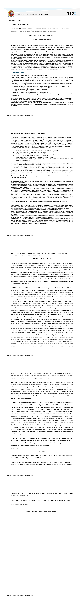

Express claimant position — not a judicial finding
Alleged asset and income capture and institutional instrumentalisation
Gil Marer and AWESWELL LIMITED maintain that the Administration is being subjected to functional capture and instrumentalisation for private benefit within the Sun Park perimeter. Their position is not merely that unrelated administrative difficulties occurred: they allege a continuing illicit mechanism of appropriation, retention and exploitation of assets, rights and income, accompanied by neutralisation or displacement of safeguards and use of institutional acts, documents and responses to consolidate private advantage. This is their express allegation requiring independent examination, not a finding made in the published decision.
The identified private core comprises Francisco Mario Matos Matas, Antonio Cogolludo Rojas, Shaila María Cogolludo Ramos, José Daniel Acosta Matos and Laura Patricia Acosta Matos. The reconstruction follows documented and expressly unresolved links to Acosta Matos/CAM, RIC/RICPE, Hotel New Trend, MYND and Canarian Hospitality; title, possession and operations; income, financing and investment; professional services; and public support or incentives. The Insolvency Administrator, courts, prosecutors, each administrative office, legal entity and later participant retain separate identities, functions and responsibility tests. A brand, group, family connection, office or professional relationship does not establish knowing participation or individual liability.
Predatory inclusion and protection of all affected parties
Alleged predatory inclusion means drawing later participants' capital, reputation, institutional credibility, professional standing, networks, services and resources into protection or expansion of the mechanism, potentially without their knowing the full history. Protection and fact-finding must include every holder of evidenced affected rights: Gil Marer, AWESWELL, LPB, Matkator and other owners, alongside potentially exposed creditors, operators, workers, investors, lenders, professionals and public bodies. Neither actual harm to every member of those categories nor complicity is presumed. The inquiry must identify who controlled each asset or income stream, who supplied legitimacy or resources, what information they received, what duty applied, what benefit or harm resulted and what lawful explanation or contrary evidence exists.
Francisco Mario Matos Matas · Antonio Cogolludo Rojas · Shaila María Cogolludo Ramos · Acosta Matos / RICPE / Sun Park: existing context
What the authority actually decides
The Secretary of Government dismisses the limited appeal against EG 17 / N.º 20-26. The decision characterises the requests as individualised verification or investigation rather than ordinary coordination, relies on EG 38/2026, considers the response congruent, and finds no material prejudice from the earlier email notification. It records receipt of the appeal on 29 September with the prescribed report, whose text it reproduces. It exhausts the administrative route and indicates contentious-administrative proceedings within two months. The full transmitted file and the native provincial report remain separate verification targets.
This is real adverse evidence and is published in full. Several requests genuinely required document-by-document checking across offices. A narrower potential challenge distinguishes those tasks from existing records of receipt, notification and execution of the administration's own ordered transfer. Its viability, standing, time limit and remedy require counsel's assessment; automatic invalidity or an unconditional right to a general investigation is not asserted.
Complete decision: all five pages
This is a complete PDF facsimile, not a selection of pages. Only the marginal recovery code/QR and unnecessary embedded signature metadata/fields were removed. Substantive text, relevant-capacity names, visible signature appearance, every ground and the appeal notice are preserved. The image copy does not replace the signed original.
Alternative view: display each of the five pages
Page 1 / 5

Page 2 / 5
Page 3 / 5
Page 4 / 5
Page 5 / 5
Genealogy and verifiable states
Provincial LAJ / judicial-office origin: REGAGE26e00073341382; separate parallel TSJC and national branches.
Supplement REGAGE26e00082040006 adds Ref.21 / Ref.24 / DP1901 as a later development, not the origin.
Visible signature date of the provincial agreement; inputs dated 20 September and notification on 22 September. The appeal decision calls it the 20 September agreement: preserve the discrepancy.
Registered appeal REGAGE26e00083460291; exact 91-page PDF matches the receipt fingerprint.
Receipt of appeal and prescribed report as stated in the decision; not by itself proof of every item in each transmission.
Dismissal of Alzada 4/2026 and communication of the decision. EG38 and its appeal, DP1901, CGPJ and prosecutorial routes remain separate.
The receipt time 20:46:23 is retained as printed: no unverified time-zone offset is appended. The originally ordered transfer and the appeal transmission are not treated as the same operation without their records.
Immediate actions — actual status
Publication prepares and connects these actions; it is not a professional instruction, filing or service on third parties.
| Priority | Action | Proposed owner / status |
|---|---|---|
| P0 | Confirm expressly instructed counsel, effective notification, competent court and time limit; document the decision whether to challenge. A file-access request must not be relied on to protect the judicial deadline. | Gil Marer and expressly instructed counsel PROPOSED_NOT_INSTRUCTED_BY_PUBLICATION |
| P0 | Obtain the complete indexed EG17/Alzada4 administrative file, native provincial report, transmission received on 29 September, original ordered transfer and notification/preservation records. | Claimant/counsel through the competent administrative channel REQUEST_NOT_SENT_BY_THIS_PUBLICATION |
| P0 | Separate preservation from disclosure and certification: identify existing records, custodian, period, retention and concrete risk; distinguish requested, ordered and executed measures. | Each competent records custodian; counsel to select lawful channel MEASURE_NOT_ASSUMED_EXECUTED |
| P1 | Verify reviewing body, current status and transmitted corpus of REGAGE26e00074355631; do not treat an unsent follow-up draft as a sent communication. | Claimant/counsel in the separate EG38 appeal CURRENT_STATUS_NOT_RESOLVED_BY_ALZADA4 |
| P1 | Compare prayers 5 and 7 and the preservation request against the dismissal; retain judicial limits and the contrary case-specific-investigation argument. Assess useful partial relief, not merely formal success. | Expressly instructed counsel ANALYSIS_NOT_FILED |
| P1 | Reconcile each asset and income stream: rights holder, effective control, instrument, use, beneficiary, affected party, loss and remedy. Keep LPB, Matkator, AWESWELL, other ownership, income and public support legally distinct. | Existing evidence and recovery workstream CONTINUING_SOURCE_RECONCILIATION |
| P1 | For each later actor: mandate, dates, information received, disclosure/verification duty, reliance, capital or reputation supplied, effect and lawful alternative. Include potentially harmed or uninformed participants, not only possible wrongdoers. | Existing institutional/professional evidence workstream ATTRIBUTED_HYPOTHESIS_TO_TEST |
| P1 | Preserve the private original and complete public derivative; reconcile existing registers and test viewer, five pages, links, bytes and retrieval. Do not enable models, expand permissions or claim working RAG without proof. | Existing GitHub publication, GitLab governance and Drive custody owners IMPLEMENTATION_REQUIRES_EXACT_READBACK |
Provenance, integrity and limits
Original: 5 pages, 326,792 bytes; preserved unchanged in private custody. Hash equality establishes byte consistency, not independent signature validation or completeness of the authority’s file.
Original SHA-256: 9dcb9921ca6f8c7d3487c4516e55a81285144c94f22bb21d83e2ef581c02e857
PDF SHA-256: 67d1343d0992890d7564d08ca640d206b42292d0bdcbccf8a196944708195eea
Facsimile admission manifest · Updated existing canonical control
RD 1608/2005 · Ley 39/2015 · Ley 29/1998 · Instrucción 1/2025